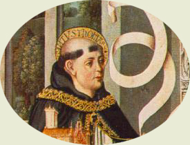

|  |
|---|
[70804] Ad Bernardum Reverendo in Christo patri, domino Bernardo, Dei gratia venerabili abbati Casinensi, frater Thomas de Aquino, suus devotus filius, se semper et ubique ad obedientiam promptum. Optaveram, pater venerande, quod convocatis fratribus, qui ex verbis illustris doctoris Gregorii scandalum patiuntur, satis facerem viva voce; sed hoc prolixitas divini officii et ieiunii prolongatio impedivit, et forte fructuosum erit, ut quod Scripturae mandatur, non solum praesentibus prodesse valeat, sed futuris. Nec absque divina dispensatione hoc gestum credo, ut me proficiscentem in Galliam vestrae litterae comprehenderant Aquini; ubi sanctissimi patris nostri Benedicti beatus Maurus, eius discipulus, ab eo transmissus in Galliam, recipere meruit litteras et sacra exenia tanti patris. Ut autem dubitantibus plenius satisfiat, inserenda sunt praesentibus verba beati Gregorii, quae ignorantibus dubitationem ingerunt et errorem: sciendum, inquit, quod benignitas Dei peccatoribus spatium poenitentiae largitur; sed quia accepta tempora non ad fructum poenitentiae, ad usum vero iniquitatis convertunt, quod a divina misericordia mereri poterant, amittunt; quamvis omnipotens Deus illud tempus uniuscuiusque praesciat, quo vita eius terminatur, nec alio in tempore quisquam mori potuit, nisi ipso quo moritur. Nam si Ezechiae anni additi ad vitam quindecim memorantur, tempus vitae crevit ab illo tempore, quo mori ipse merebatur: nam divina dispositio eius tempus tunc praescivit, quo hunc postmodum ex praesenti vita subtraxit. In quibus verbis satis lucide doctor lucifluus duplicem uniuscuiusque hominis considerationem habendam determinat: unam quidem secundum se, aliam vero secundum quod ad divinam praescientiam comparatur. Secundum se quidem homo consideratus, in his, scilicet, quae circa eum accidunt, necessitati non subiacet; sed possibile est aliqua circa ipsum contingere, quae nullatenus sortiuntur effectum, quod expresse praemittit de peccatoribus, dicens: quia accepta tempora non ad fructum poenitentiae, ad usum vero iniquitatis convertunt, quod a divina misericordia mereri poterant, non ex necessitate amittunt. Unde ea quae contra hominem accidunt, non ex necessitate eveniunt; eadem enim ratio est de morte, et de quibuscumque aliis quae homo agit aut patitur; omnia enim divinae providentiae supponuntur. Si vero consideretur homo divinae providentiae comparatus, ea quae agit vel patitur, quandam necessitatem incurrunt, non quidem absolutam, ut omnino, secundum se considerata, non possint, ut dictum est, aliter evenire, sed conditionalem, quia scilicet haec conditionalis est necessaria: si Deus aliquid praescit, hoc erit. Non enim possunt ista duo simul stare, aliquid esse a Deo praescitum, et illud non esse; quia sic Dei praescientia falleretur. Est autem omnino impossibile, ut falsitatem veritas patiatur; et hoc significant verba sequentia beati Gregorii, quum subdit: quamvis omnipotens Deus illud tempus uniuscuiusque ad mortem praesciat, quo vita eius terminatur, nec alio in tempore quisquam mori potuit, nisi ipso quo moritur, scilicet quo a Deo praescitus est mori. Non enim possunt ista duo simul esse, quod Deus praesciat aliquem mori quodam tempore, et ipse alio tempore moriatur; alioquin Dei scientia falleretur. Secundum se autem consideratus homo, potuit alio tempore mori. Quis enim dubitat eum potuisse prius transfigi gladio, igne comburi, aut praecipitio aut laqueo vitam finire? Hanc et distinctionem sapiunt eius verba sequentia; subdit enim: nam si Ezechiae anni ad vitam quindecim memorantur, tempus vitae crevit ab illo tempore, quo mori ipse merebatur. Stultum autem est dicere, quod aliquis mereatur id quod impossibile est evenire. Ipse ergo, secundum se consideratus, poterat tempore illo mori; sed divinae scientiae comparatus, non poterant haec simul esse: ut ipse uno tempore moreretur, et alio tempore Deus praesciret moriturum, et (...) doctoris exprimunt, quasi oculata fide dubitantium animis ingeramus, considerare oportet differentiam divinae cognitionis et humanae. Quia enim homo subiacet mutationi et tempori, in quo prius et posterius locum habent, successive cognoscit res, quasdam prius et quasdam posterius: et inde est quod praeterita memoramur, videmus praesentia, et prognosticamur futura. Sed Deus sicut liber est ab omni motu, secundum illud Malachiae: ego dominus et non mutor; ita omnem temporis successionem excedit; nec in eo inveniuntur praeteritum et futurum; sed praesentialiter omnia futura et praeterita ei adsunt; sicut ipse Moysi famulo suo dicit: ego sum qui sum. Eo ergo modo ab aeterno praescivit hunc tali tempore moriturum, ut modo nostro loquimur; cum tamen eius modo dicendum esset, videt eum mori, quomodo ego video Petrum sedere, dum sedet. Manifestum est autem, quod ex hoc, quod video aliquem sedere, nulla ingeritur ei necessitas sessionis. Impossibile est haec duo simul esse vera, quod videam aliquem sedentem, et ipse (...) non sedeat; et similiter non est possibile quod Deus praesciat aliquid esse futurum, et illud non sit; nec tamen propter hoc futura ex necessitate eveniunt. Haec sunt, pater charissime, quae, vestrae iussioni obediens, ad errantium reductionem scripsi; quae si eis non sufficiunt dicta, rescribere vobis obediens non desinam. Valeat paternitas vestra diu. Frater Raynaldus commendat se vobis.